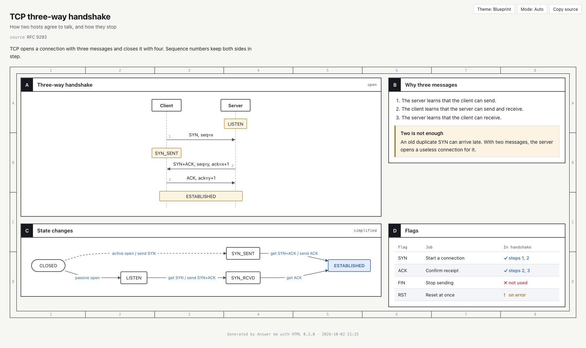

先写内容，再交给程序排版
读一段复杂解释，用户经常需要自己把步骤画成箭头，或把几种方案抄成对照表。Answer me with HTML让现有代理先写短的Markdown草稿，再由本地命令行程序计算面板和图形布局。比如网络握手可以同时呈现消息顺序、状态变化和标志位表；比较方案则适合把条件并排。工具不是另一款问答模型，仍由用户原来的代理提供内容。它避免模型逐个猜测SVG坐标，减少的主要是页面构造工作；箭头画得整齐，并不会让错误的因果关系变正确。
Answer me with HTML · 开源更新 · 作者故障记录

读一段复杂解释，用户经常需要自己把步骤画成箭头，或把几种方案抄成对照表。Answer me with HTML让现有代理先写短的Markdown草稿，再由本地命令行程序计算面板和图形布局。比如网络握手可以同时呈现消息顺序、状态变化和标志位表；比较方案则适合把条件并排。工具不是另一款问答模型，仍由用户原来的代理提供内容。它避免模型逐个猜测SVG坐标，减少的主要是页面构造工作；箭头画得整齐，并不会让错误的因果关系变正确。
作者在10月26日的第335号问题中记录，代理沿用VitePress、Docusaurus等文档工具常见的三冒号写法，写出callout与flow组件。此前检查器没有提示，页面却把这些标记和正文一起显示成普通段落。使用者看到了一个已生成文件，想要的关系图却没有出现。0.5.9先让这种输入明确报错并给出正确示例，至少使缺失变得可见。该记录来自作者自己的会话，不能据此推算其他用户的发生比例，但输入、错误表现和处理路径都有可追踪的公开描述。
0.5.10接着将已知组件的三冒号块作为原有代码块的等价写法。作者在第340号问题中解释，上一版虽然提示正确，却需要代理改写并再次渲染；模型习惯这种语法时，重试只是翻译标记，没有增加内容。新解析路径保留边界：未知名称和代码示例里的冒号仍是文字，没有闭合的块仍然报错。维护者报告对应两种写法产生相同主体HTML，并补充了解析测试；本次没有自行运行这些测试。这里值得注意的是工具适应明确的输入意图，同时继续拒绝真正不完整的结构。
生成页不只供观看。参考文档描述，读者可在面板上留言，标记建议、疑问或保留项，再将整理好的回复复制回代理；待选问题起初不预选，回复会区分确认、更改和未回答。这样能够明确指出哪块解释需要改，省掉重新描述页面位置。输出文件可以离线阅读，使用技能仍需要已有代理和Node环境，模型本身的费用也不会消失。示例截图页脚标明0.2.0和10月2日，它展示既有阅读形式，不证明本次补丁效果。对于已经足够清楚的一句话答案，另做页面反而可能增加切换成本。